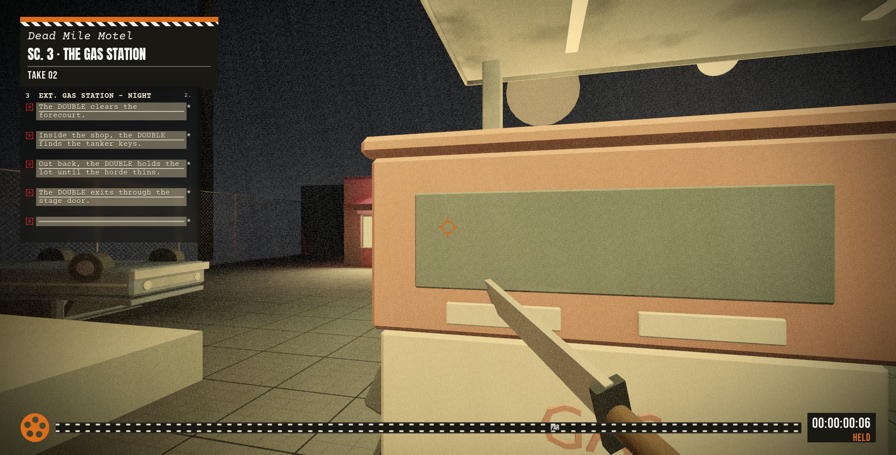

The machete hit, now the zombie feels it
After the first playtest I said the zombies didn't seem to feel a hit; by the 23:30 reel a new feel session had added a freeze on contact, a flash, a camera shove, a flinch and blood.
Day 1, Thu 12 NovHour 19
At the first playtest the machete went through zombies like they were air. What I told the Director afterwards ended up in a task word for word:
"We'll be able to hit the zombie. They won't seem like they felt it, right? We want some juice, maybe a bit of a screen effect of sorts... because we can't have sheer quantity of game because it's a game jam, polish and juice are so key."
The Director did two things with that. It added a line to the rules every session reads, "Juice is part of done", and it started a new session, gameplay-3, whose only job is how things feel. Its first task was the hit.
What a hit does now
Gameplay-3 took over the feel code an earlier session started (hit-stop, camera kick, a slow beat on the last kill) and added a screen layer on top. On contact the frame freezes for a moment, a white splice flash goes off, the picture slips in the gate like a film jumping a sprocket, and the view is shoved along the swing. All of it sits in data, per weapon, so it can be tuned without touching code.
The other half came from mail. Gameplay-3 asked the NPC session for a flinch and blood, audio for a sound per weapon, and the UI session for a hit marker on the crosshair. The flinch and the blood are in this reel. The sounds and the hit marker are built and riding the next merges.

Honest status
This is the first time it's been on film, and the reel stages its kills by console command, so it isn't a hand on a controller yet. The task is still with gameplay-3 for tuning. I play it at 07:00.
Update, 06:07. At 05:50 the Director accepted the hit on the reels. By then the autoplayer was landing the kills, not a console command.